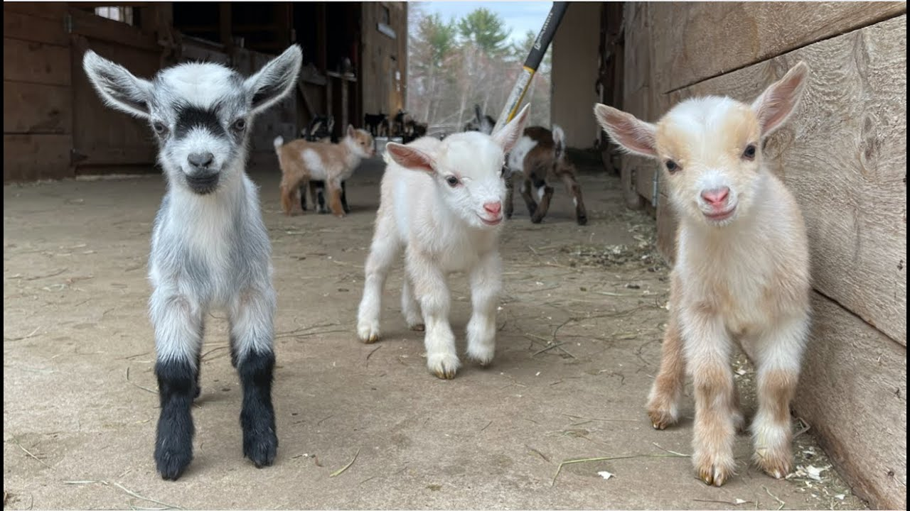
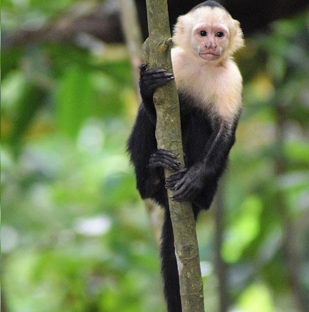
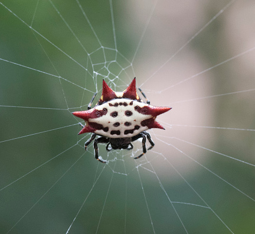
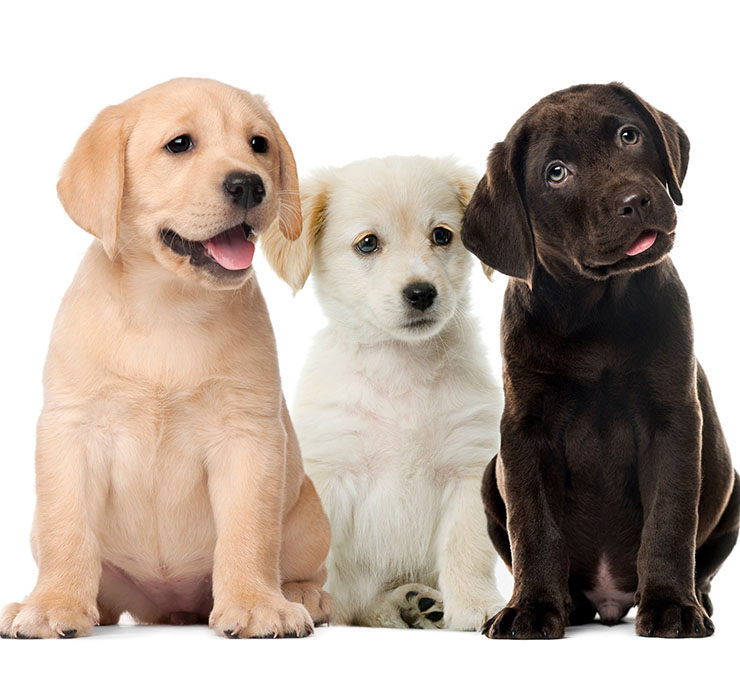

En este apartado te muestro mis animales favoritos☺
Empezamos con mi top 5 de animales favoritos.
1. Cabra
La cabra no se agrupa en manadas como otros mamíferos. Aún así, necesita convivir en grupos de dos o más ejemplares, ya que es un animal social. Tiene un comportamiento muy curioso y le gusta escalar. Sus hábitos son diurnos, por lo que descansa durante la noche.
2. Mono Capuccino
Se cree que el mono capuchino es el más inteligente de los monos del Nuevo Mundo, le gusta explorar y cuando es observado en cautiverio, a menudo reduce a piezas las cosas que halla.
3. Pato
Tienen el cuerpo compacto, por lo que no se les dificulta nadar bajo el agua. Mientras que sus patas con membranas entre los dedos, impiden que se hundan y los ayuda a nadar a gran velocidad. Pueden girar el cuello completamente hacia atrás, logrando limpiar sin problemas las plumas del lomo.

4. Araña Cangrejo
A pesar de su aspecto, no es una araña venenosa. Este tipo de años tiene un ciclo de vida de un año. Tras el proceso de apareamiento, los machos de la especie mueren.
5. Perros
Mi raza de perro favorita es Labrador, es un animal muy sociable que disfruta de la compañía de sus dueños y de otros perros. Además, destaca por su lealtad, y es de los mejores perros para niños que existen. Debido a su origen como perro de caza, también es muy activo y necesita grandes dosis de ejercicio diario.
